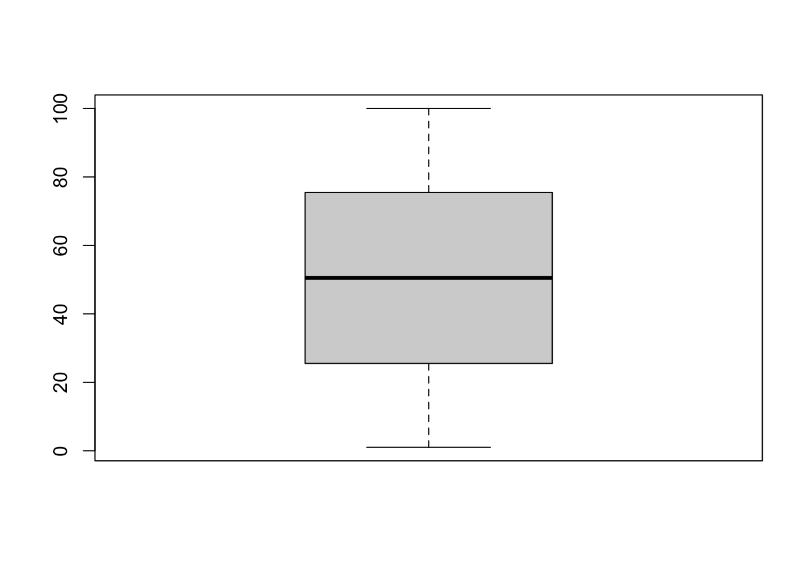

---
project:
type: book
output-dir: "docs"
execute-dir: project
---9 YAML设置
Quarto主要由三大部分组成：metadata, text, 和 code。其中metadata是文档开头写在”---“之间的句子，它采用的是YAML语法，所以有时候也被叫做YAML metadata 或者 the YAML frontmatter。YAML定义了Quarto文档的各种属性，比如编译文件类型、主题、代码块的执行行为以及目录等。在YAML metadata中采用正确的缩进十分重要。

9.1 project设置
project在编写Quarto Book或者Quarto Websites时使用，因为要创建这些类型的Quarto项目需要通过新建一个Quarto Project来进行，因此YAML中的project项就定义了项目的类型是Quarto Book还是Quarto Websites，以及其他项目的基本设定。并且这些类型的Quarto项目会在根目录中生成一个”_quarto.yml”文件，对于YAML的配置在这个独立的文件中进行，从而将项目内的多个.qmd文档合并编译成一个Quarto Book或者Quarto Websites。
-
project：项目类型。定义了项目编译后的文档类型，包括”default”, “website”（Quarto Websites）和”book”（Quarto Book）。这里我们在新建项目时选择了Quarto Books，所以这里自动填写了”books”。
output-dir：输出文件夹。编译后的HTML文件、PDF文件以及运行code chunk后产生的图像、数据等的输出文件夹。上面的例子中将输出文件夹指定为”docs”文件夹可以方便将输出的HTML文件通过GitHub Pages发布（详见 Chapter 14 ）。execute-dir：在编译时，各个qmd文件内的code chunk脚本运行的根目录，默认是”file”，即当前qmd文档所在目录，可设置为 “project”，这样在编译过程中执行代码块时会将运行根目录设置为项目根目录。
9.2 标题/作者/日期信息
对于HTML的编译，这些信息会展示在文档的开头部分。
---
title: Quarto学习笔记
subtitle: 面向多编程语言的新一代R Markdown
author: 杜俊宏
date: 2023/11/10
date-modified: now
date-format: "YYYY[年]M[月]D[日] HH:mm"
author-title: 作者
published-title: 写作日期
---title：标题。subtitle：副标题。在标题下方以较小字号展示。author：作者姓名。author-title：作者栏的标签。默认标签为”AUTHOR”date：文档发行日期。日期既可以手动添加，如”2023/11/10”，也可以通过now（输出样式：2023年11月11日 19:01）或today（输出样式：2023年11月11日）自动生成日期。date-modified：文档的修改日期。date-format：日期格式。published-title：修改date的标签，默认是”PUBLISHED DATE”。
date-format的设置
date-format通过以下关键词来定义日期格式：
| Style | Description | Example |
|---|---|---|
full |
A full date that includes the weekday name | Monday, March 7, 2005 |
long |
A long date that includes a wide month name | March 7, 2005 |
medium |
A medium date | Mar 7, 2005 |
short |
A short date with a numeric month | 3/7/05 |
iso |
A short date in ISO format | 2005-03-07 |
也可以通过以下语法更加灵活的定义日期格式：
| ormat String | Output | Description |
|---|---|---|
YY |
18 | Two-digit year |
YYYY |
2018 | 四位数年份 |
M |
1-12 | The month, beginning at 1 |
MM |
01-12 | 两位数月份 |
MMM |
Jan-Dec | The abbreviated month name |
MMMM |
January-December | The full month name |
D |
1-31 | The day of the month |
DD |
01-31 | 两位数日期 |
d |
0-6 | The day of the week, with Sunday as 0 |
dd |
Su-Sa | The min name of the day of the week |
ddd |
Sun-Sat | The short name of the day of the week |
dddd |
Sunday-Saturday | The name of the day of the week |
H |
0-23 | The hour |
HH |
00-23 | 两位数小时，24小时制 |
h |
1-12 | The hour, 12-hour clock |
hh |
01-12 | The hour, 12-hour clock, 2-digits |
m |
0-59 | The minute |
mm |
00-59 | 两位数分钟 |
s |
0-59 | The second |
ss |
00-59 | The second, 2-digits |
SSS |
000-999 | The millisecond, 3-digits |
Z |
+05:00 | The offset from UTC, ±HH:mm |
A |
AM PM | |
a |
am pm | |
Do |
1st 2nd … 31st | Day of Month with ordinal |
可以通过”[]“添加自定义字符。通过这些语法，可以定制符合中文语法的日期格式，如：date-format: "YYYY[年]M[月]D[日] HH:mm"
Tip
关于日期的详细指南，详见：https://quarto.org/docs/reference/dates.html。
9.3 theme主题设置
theme定义了编译文档的主题。可以直接调用Quarto内置的Bootswatch主题，如”default”、“cerulean”和”cosmo”等，也可以通过Sassy Cascading Style Sheets (SCSS)文件来自定义主题。theme参数既可以在YAML中直接定义，也可以在不同的format内定义，这样可以对不同的编译格式应用不同的主题。关于Quarto主题的详细指南，参考Quarto Guide。
---
format:
html:
theme: flatly
---Quarto的HTML文档默认使用Bootstrap 5样式输出（theme: default）。Quarto内置了来自Bootswatch项目的25个主题。下面列出了可用的主题。关于这些主题的介绍详见：https://bootswatch.com。

个人认为比较美观、清晰的主题有：Cosmo、Flatly、Lux和Darkly。可以通过light和dark分别设置一套亮色主题和一套深色主题，如：
---
format:
html:
theme:
light: flatly
dark: darkly
---这样，在输出的HTML网页的右上角会出现一个亮色/深色模式的切换开关。
9.4 toc目录设置
和theme一样toc同样可以在YAML中直接定义，也可以在不同的format内定义。
---
toc: true
toc-title: Contents
toc-depth: 2
toc-expand: 2
toc-location: left
---toc：是否显示目录。toc-title：目录的标题。toc-depth：设置目录显示的最低层级（默认为显示到3级标题）。toc-expand：在一开始目录显示到多少级，默认显示到一级标题。当向下浏览内容时目录会自动展开到toc-depth所设置的层级。设置为true时，则在一开始就展开所有目录；设置为false则在一开始折叠所有目录。toc-location：设置目录的位置。默认在右侧（right）,可以设置为left或body（在文稿最开头显示）。
9.5 number-sections标题编号设置
和theme一样number-sections同样可以在YAML中直接定义，也可以在不同的format内定义。
number-sections: true
number-depth: 3number-sections：设置为true时会给各级标题编号。默认为false。number-depth：编号的最低标题层级。默认给所有级别的标题编号。{.unnumbered}：如果想要某一个标题不编号，则把这行命令粘贴到该标题后面。如”第三章{.unnumbered}“。{.unlisted}：将某个标题设置为不在目录中列出。如”第三章{.unlisted}“。如果想要某个标题既不编号也不在目录中列出就可以这样写：”标题{.unnumbered .unlisted}“。
9.6 排版设置
主要定义了图/表标题的位置、参考文献/脚注的位置、页面大小和页边距等。可以在YAML中直接定义，也可以在不同的format内定义。
---
fig-cap-location: bottom
tbl-cap-location: top
reference-location: margin
citation-location: document
----
fig-cap-location：图片标题的位置。默认在图片底部（bottom）。 -
tbl-cap-location：表格标题的位置。默认在表格上方（top）。 -
reference-location：脚注的默认展示位置。默认为文档最后 (document)。 -
citation-location：参考文献的默认展示位置。默认为文档最后 (document)。
| Option | Description |
|---|---|
reference-location |
Where to place footnotes. Defaults to document.[ document | section | block | margin ] |
citation-location |
Where to place citations. Defaults to document.[ document | margin ] |
cap-location |
Where to place figure and table captions. Defaults to bottom for figures and top for tables. | [top | bottom | margin] |
fig-cap-location |
Where to place figure captions. Defaults to bottom.[ top | bottom | margin] |
tbl-cap-location |
Where to place table captions. Defaults to top.[ top | bottom | margin] |
9.7 execute代码块执行设置
execute用来指定代码块的执行行为，例如是否运行、是否显示警告信息和是否缓存运行结果等。
---
execute:
eval: false
warning: false
cache: true
---eval：设置为false时只显示代码，不运行。默认为true。echo：设置为false时在输出文件中不显示代码，仅显示代码的运行结果。设置为fenced，会将代码块的设置，即”#|“符号后的内容，也展示出来。Figure 9.1 这个代码块就用了echo: fenced这个设定，可以看一下效果。默认为true。output：设置为false时，只运行代码不显示运行结果。默认为true。warning：是否显示代码运行的警告信息。默认为true。cache：是否开启运算结果缓存。默认为false。如果设置为true，就会在编译时将源代码的运算结果保存到文件目录中后缀为”_cache”的文件夹中。这样在重新编译同一个文档时会加快编译速度。
除了对代码执行行为的全局设置，我们也可以针对每个代码块设置其执行行为。许多参数和YAML中的语法相似，只不过需要在每个参数前加上”#|”符号。如：
```{r}
#| eval: true
#| warning: false
#| output: true
#| label: fig-箱型图
#| fig-cap: 箱型图
boxplot(1:100)
```
9.8 crossref交叉引用设置
crossref定义了图/表的标签、默认引用样式、编号类型等。
---
crossref:
fig-title: 图
tbl-title: 表
title-delim: "："
fig-prefix: 图
tbl-prefix: 表
sec-prefix: 章节
ref-hyperlink: true
fig-labels: arabic
tbl-labels: arabic
subref-labels: alpha A
---fig-title: 图的默认标签文字（默认是”Figure”）tbl-title: 表的默认标签文字（默认是”Table”）title-delim: 图、表标签文字和后面的图、表标题之间的连接符（默认是”:“）fig-prefix: 图的默认引用样式（默认是”Figure”）tbl-prefix: 表的默认引用样式（默认是”Table”）sec-prefix: 章节的默认引用样式（默认是”Section”）ref-hyperlink: 是否为交叉引用加上内部链接（默认是”true”）fig-labels: 图片的编号类型（默认是阿拉伯数字：arabic)tbl-labels: 表格的编号类型（默认是阿拉伯数字：arabic）subref-labels: 次级引用编号类型，如组图中的小图（默认是小写字母：alpha a）
可用的编号类型包括：
arabic(1, 2, 3)roman(I, II, III, IV)roman i(i, ii, iii, iv)alpha x(start from letter ‘x’)alpha X(start from letter ‘X’)
9.9 参考文献设置
只要在编辑qmd文档时插入了参考文献，YAML中会新增参考文献的配置选项：bibliography: references.bib。同时根目录下会生成一个名为”references.bib”的参考文献配置文件。该配置文件包括了qmd文档中所插入的所有参考文献的列表。以BibTeX/Citation风格语言编写。bibliography指定了这个参考文献配置文件所在的路径。
---
bibliography: references.bib
---
9.10 format编译设置
format定义了qmd文档编译后的文件类型，例如：“html”, “pdf”, “docx”, “odt”, “pptx”, “revealjs”, “beamer”, “gfm”（GitHub风格的Markdown文档）, “commonmark”, “mediawiki”, “epub”, “ipynb”。不同的编译格式对应的子项设置各不相同，有些参数适用于某些格式但是在另一些格式中则无法兼容。所有支持的编译格式详见Quarto官方文档。下面的案例为编译HTML和GFM的常用设置。
---
format:
html:
theme:
light: flatly
dark: darkly
gfm:
toc: true
toc-depth: 1
number-sections: true
citation-location: document
output-file: "README.md"
---编译Quarto文档时，首先knitr将运行所有代码块，并创建一个新的markdown（.md）文档，其中包括源代码及其输出结果。接下来，生成的markdown文件经过pandoc（RStudio内置了pandoc）处理后，被转换成HTML、PDF或者Word等我们需要的文档格式。RStudio封装了这些操作，当我们完成Quarto编辑，点击渲染时，就会完成上述过程。
Quarto的渲染工作流

编译HTML
---
format:
html:
theme:
light: flatly
dark: darkly
embed-resources: false
code-tools: true
title-block-banner: images/banner.jpg
title-block-banner-color: "black"
toc: true
toc-title: 目录
toc-location: left
toc-depth: 2
toc-expand: 1
number-sections: true
number-depth: 3
anchor-sections: true
link-external-icon: true
link-external-newwindow: true
df-print: kable
code-link: true
---theme：主题。同 Section 9.3 。embed-resources：是否将所有源文件嵌入HTML文件以方便分享。默认为”false”。code-tools：是否在网页右上角显示”<code>“按钮。点击该按钮可以看到Quarto文档的原始markdown代码。-
title-block-banner：标题横幅设置。title-block-banner有以下选项：true：将标题以网页横幅的形式展示，样式为them中所选样式的默认样式。具体颜色：如
title-block-banner: "#003262"。图片路径：如
title-block-banner: images/banner.jpeg。
toc相关设置：同 Section 9.4 。number-sections、number-depth：同 Section 13.6 。anchor-sections: 设置为true时，当鼠标移到各级标题上时会显示anchor link，方便我们复制直接定位到该标题的超链接。link-external-icon：设置为true时会在外部链接上显示一个小图标。link-external-newwindow：是否在新标签页打开外部链接。df-print：表格输出样式-
code-copy：设置代码复制按钮：true: 总是在代码块右上角显示代码复制按钮。false: 隐藏代码复制按钮。hover：（默认）当鼠标移过时显示代码复制按钮。
code-fold: 是否折叠代码。code-link: 是否自动为函数加上超链接。该功能基于downlit包，可以自动为识别到的函数加上一个链接到官方文档的超链接。
编译GitHub Flavored Markdown（GFM）
我们可以将Quarto文档转换为GitHub风格的Markdown文档（GitHub Flavored Markdown，GFM）。这可以用来生成GitHub项目的README.md文档。
---
title: "My Project"
format:
gfm:
identifier-prefix: readme # 标识符
# preview-mode: raw # 预览原始markdown
keep-yaml: true
toc: true
toc-depth: 1
number-sections: true
citation-location: document
output-file: "README.md" # 输出文档的文件名
---编译PDF
如果要在rmarkdown、bookdown中使用PDF输出功能， 可以在在R中安装tinytex扩展包并安装TinyTeX编译软件：
install.packages('tinytex')
tinytex::install_tinytex()其中上面第一行命令安装R的tinytex扩展包， 第二行将下载LaTeX编译程序的服务器设置为清华大学tuna镜像站， 第三行安装LaTeX编译程序。
如果安装成功， TinyTeX软件包在MS Windows系统中一般会安装在 C:\Users\用户名\AppData\Roaming\TinyTeX目录中， 其中”用户名”应替换成系统当前用户名。 如果需要删除TinyTeX软件包， 只要直接删除那个子目录就可以。
为了判断TinyTeX是否安装成功， 在RStudio中运行：
tinytex::is_tinytex()结果应为TRUE, 出错或者结果为FALSE都说明安装不成功。
当用户使用RMarkdown和tinytex包转换latex并编译为PDF时， 如果缺少某些latex宏包， tinytex会自动安装缺少的宏包。